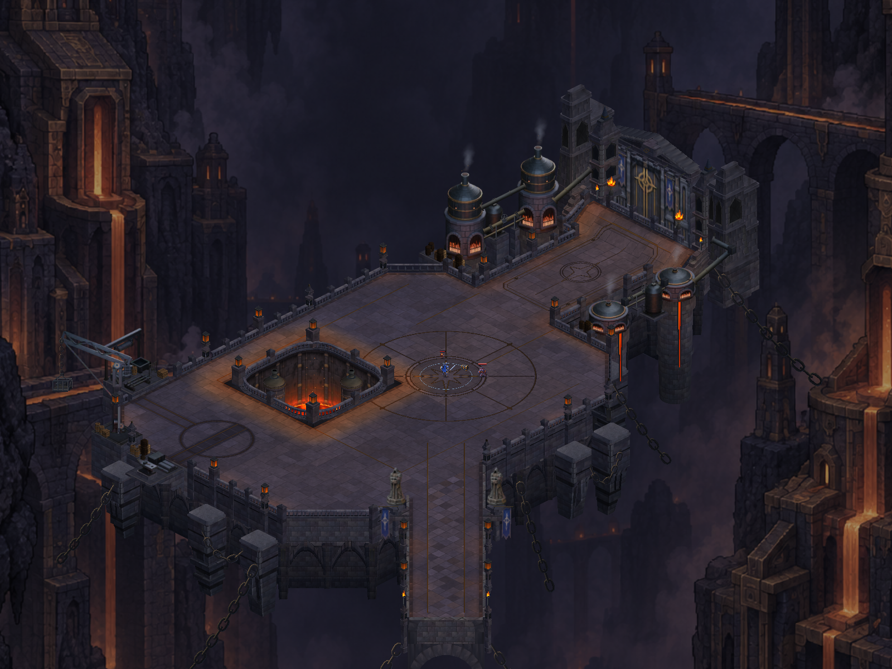
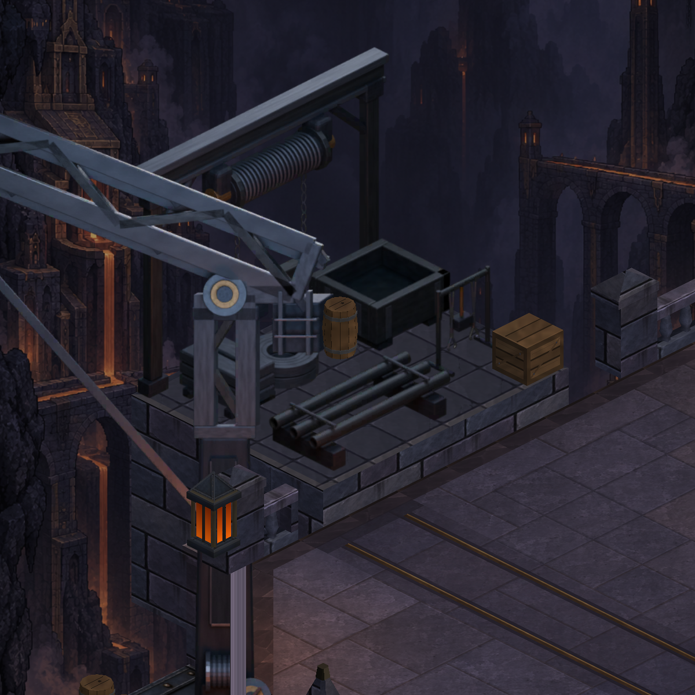
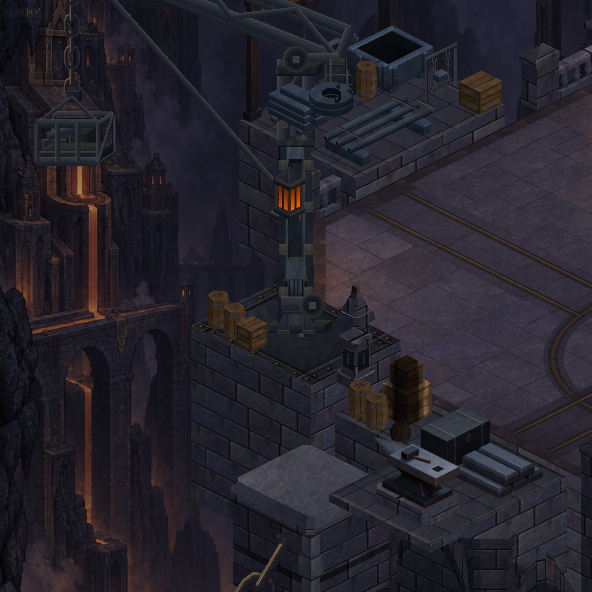
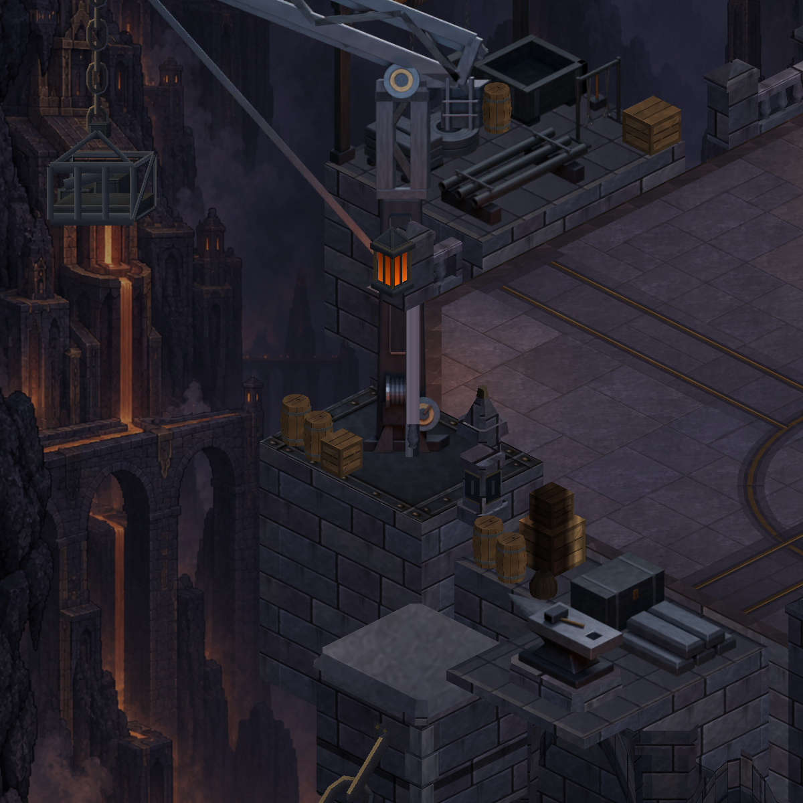
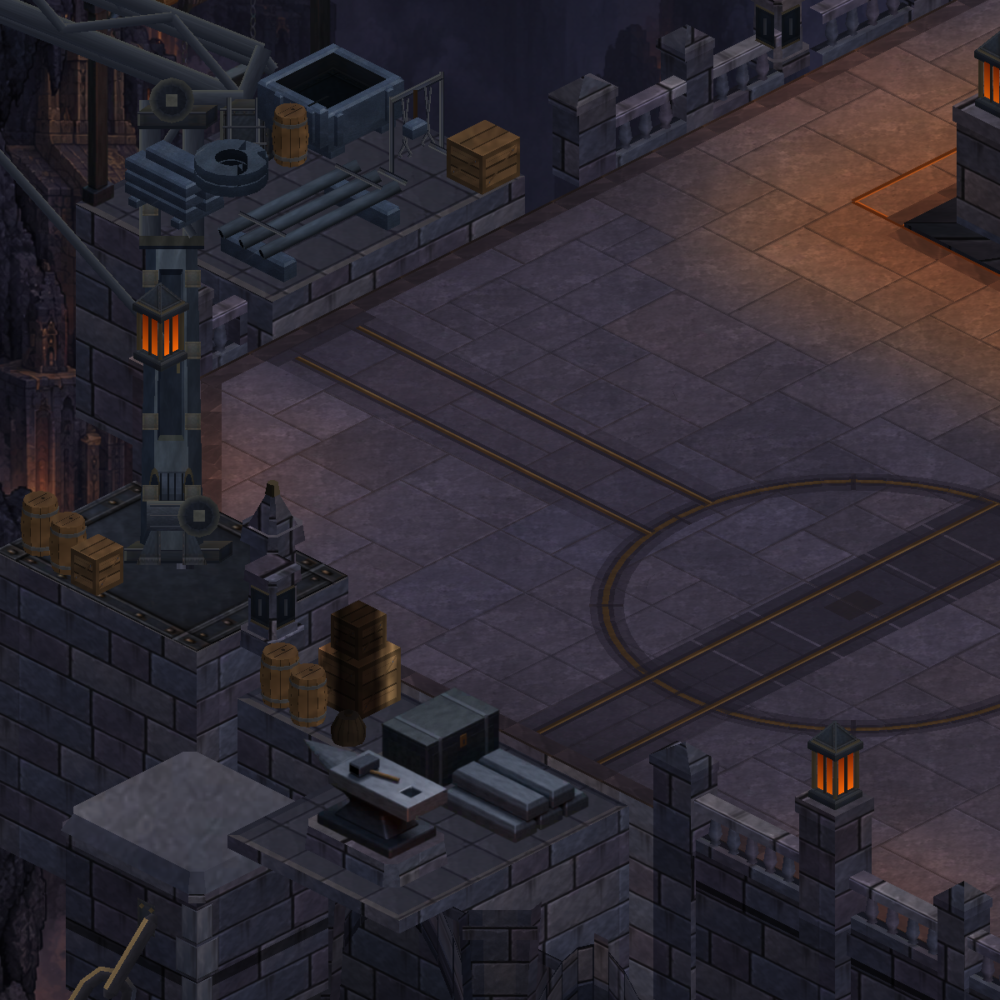
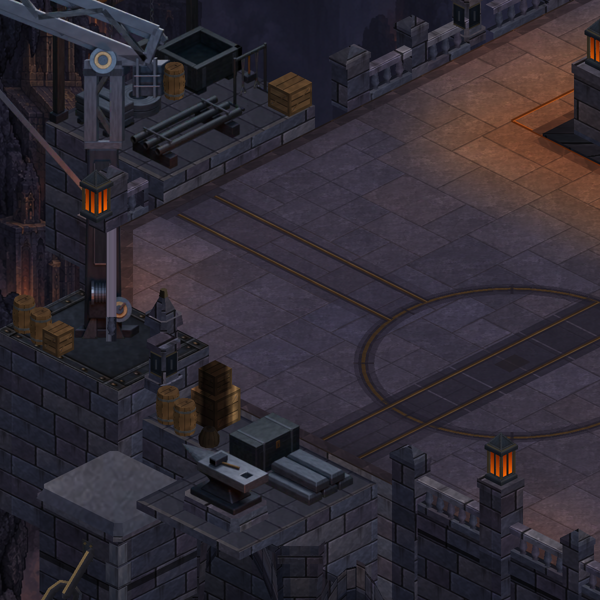
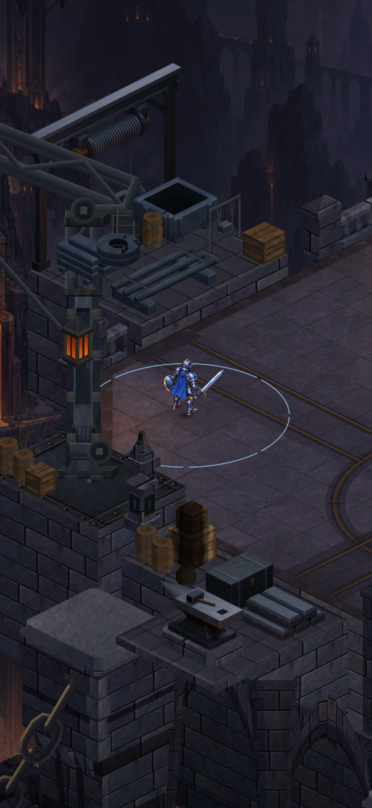
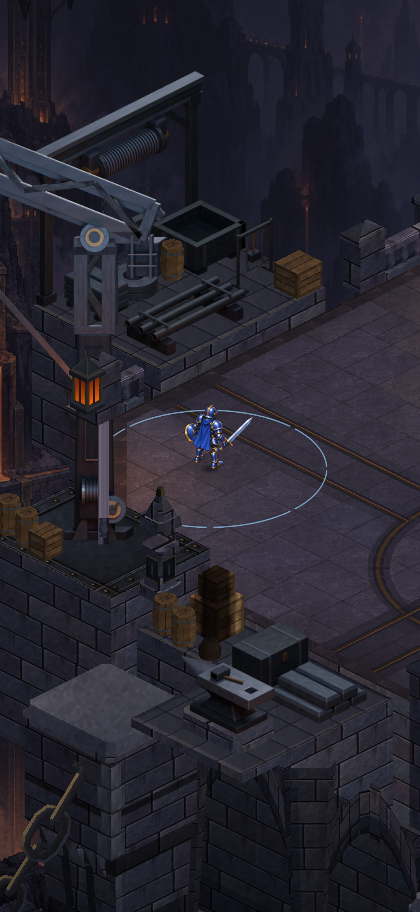

CRYPTFORGE · ACTUAL UNITY CAPTURES
Workshop coherence
Authored metal stock and crane surfaces, within the established exterior shelves. The target is readable machinery with convincing material form at gameplay scale.
Corrected actual Unity visual review accepted. Full tests:409 .NET +432 EditMode +151 PlayMode =992 passed. Android APK ready; physical-device installation and acceptance pending. No performance result is claimed.

After · actual Unity capture. Open for full resolution.
Metal stock station
Compare pipe mouths, coil and basin form, and the relationship between rear hoist, foreground wood and crane.
 Before · existing procedural metal below the authored hoist.
Before · existing procedural metal below the authored hoist.
After · rounded pipe mouths, coherent coil and basin surfaces.Crane and western workshop
The feet, chain, basket and lattice openings must remain coherent. A material replacement should read as one machine.

Before · lower housing, mast and suspended basket.
After · authored crane; localized masonry ordering restores the lower mast.
Before · crane, stock, salvage and freight track.
After · integrated stock and crane in the western workshop.At gameplay proportions
Matched walkable position with production follow width and hidden HUD. These staged Unity images are not physical-device screenshots.

Before · expanded yard, design(-26,15).
After · same position and camera; nearby material and ordering review.Final region: 29 renderers and 116,178 vertices, versus 26 and 118,902 before. Two authored cards and one localized masonry batch add three renderers while replacing procedural geometry. The concept remains the art target; this peripheral material package does not establish complete reference fidelity or a performance improvement.
Production and depth notes · Updated complete map · Before counts · After counts